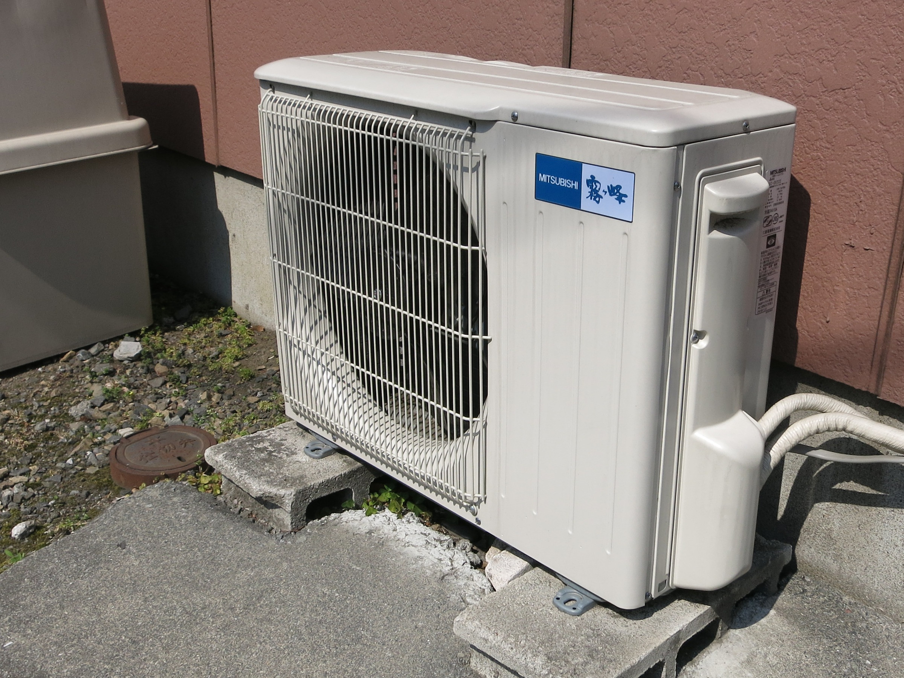

System image

What it is
VRF (Variable Refrigerant Flow) is a multi-zone heat pump system. One (or a few) outdoor units connect to many indoor units using refrigerant piping. The system can vary the refrigerant flow to match the load in each zone, which is why it can be efficient.
Where you’ll see it
- Offices with lots of zones and different schedules
- Schools and higher education buildings
- Renovations where duct space is limited
Main components
Outdoor unit(s)
Indoor unit(s)
Refrigerant piping
Branch boxes / headers
Controls network
Condensate drains
Indoor unit types include ducted, cassette, wall mount, and more.
How it works
- Outdoor compressor adjusts speed to match total building load.
- Refrigerant is sent to indoor units that are calling for heating or cooling.
- Each indoor unit uses its coil as an evaporator or condenser depending on mode.
- Fans in the indoor units move air across the coil to condition the room.
- Controls coordinate capacity so zones stay near setpoint without constant cycling.
Pros / Cons
Pros
- Strong zoning and comfort
- Can reduce large ductwork
- Heat recovery systems can move heat between zones
Cons
- More design + controls complexity
- Refrigerant safety/volume considerations
- Coordination for piping routes, branch boxes, and condensate